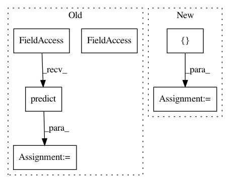

3721aada353b474d5b5ce726fa65de4968fb6b5e,Orange/classification/logistic.py,,,#,79
Before Change
m = LogisticRegressionSimple(lambda_=2)
m.fit(iris.X, iris.Y.ravel())
p_simple = m.predict(iris.X)
c = LogisticRegressionLearner(lambda_=2)
l = c(iris)
p_orange = l(iris)
After Change
Y[Y == 2.0] = 0.0
m = LogisticRegressionLearner(lambda_=1.0, normalize=False)
scores = []
for tr_ind, te_ind in StratifiedKFold(Y.ravel()):
s = np.mean(m(data[tr_ind])(data[te_ind]) == data[te_ind].Y.ravel())
scores.append(s)
print(np.mean(scores))
In pattern: SUPERPATTERN
Frequency: 3
Non-data size: 6
Instances
Project Name: biolab/orange3
Commit Name: 3721aada353b474d5b5ce726fa65de4968fb6b5e
Time: 2013-06-02
Author: jure.zbontar@gmail.com
File Name: Orange/classification/logistic.py
Class Name:
Method Name:
Project Name: dirty-cat/dirty_cat
Commit Name: 24a4c38ba686cfc61ecc52ccc30270d1d8833ca9
Time: 2018-12-21
Author: pierreglaser@msn.com
File Name: examples/05_scaling_non_linear_models.py
Class Name:
Method Name:
Project Name: oddt/oddt
Commit Name: f8175e0221bbf31ffc8c10ee809b7ee2e118362d
Time: 2018-02-08
Author: maciek@wojcikowski.pl
File Name: oddt/scoring/functions/NNScore.py
Class Name: nnscore
Method Name: train